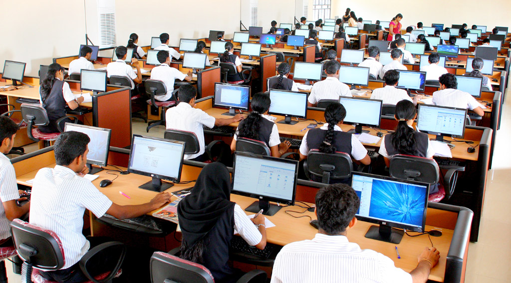
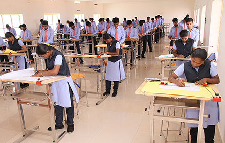
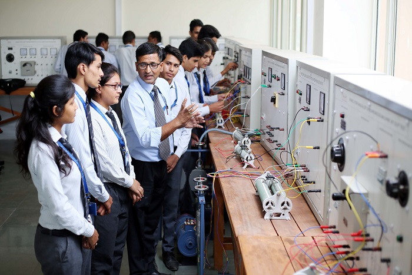
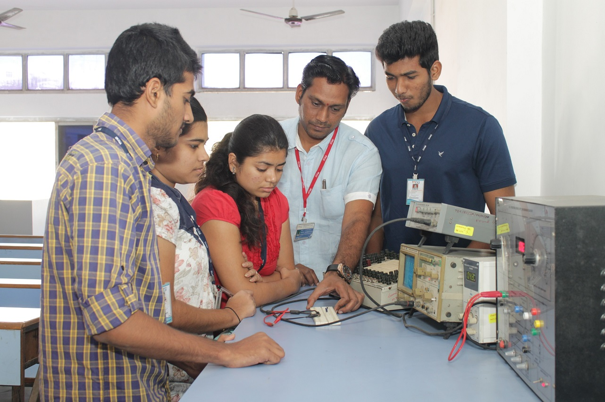

INSTITUTE OF TECHNOLOGY AND ENGINEERING MALEGAON (BK)
APPROVED BY AICTE NEW DELHI,GOVT. OF MAHARASHTRA, DTE MUMBAI
MECHANICAL DEPARTMENT
Welcome to the Department of Mechanical Engineering at SVPM College of Engineering Malegaon (Bk). We started our journey in the year of 1990.
Over the last two decades, we have grown our expertise and competence in the core Mechanical Engineering curriculum and research. Accordingly, our
primary focus is to provide prominent learning environment to the rural students through integration of academics, research, industrial exposure, and
social responsibilities. We also focus on the holistic development of students in tune with the requirements of the industry/ research institutions and
other employers.The students are taught by excellent experienced staff members who are very diligent in carrying out their teaching duties. The approach
of the department is to make the learning process for the students interesting and participative with experiential learning and strong emphasis on practical
education, and exposure to real time scenarios through strong industry interface. The department is provided with sufficient resources to meet these
objectives. In addition to competent, well qualified and experienced faculty, the labs at the department are well equipped and maintained.Finally, it is my
pleasure to work with such highly distinguished staff and passionate students in achieving our department mission and vision.
COMPUTER & INFORMATION TECHNOLOGY DEPARTMENT

It gives me immense pleasure to introduce one of the Best Computer Department in rural areas. Our Computer Department Faculty is cultivating rural
students for becoming creator of such technologies that will make constant improvement in health, quality life and economic well being of every common
masses in the universe. We motivate students to handle uncertain situations, with confidence and excellence by providing them experiential learning
opportunities. Further we understands the importance of student's involvement in various external and internal professional bodies to helps them in
bridging the technology gap between Industry- academia, enriches knowledge and skill in latest industry trends. So "Join us, Learn and Lead the
Technology Creations".
CIVIL DEPARTMENT

It gives me pleasure to forward the message regarding the department. The civil engineering is the core branch and has immense importance in rural as
well as urban metropolitan areas. Our department is well equipped and all laboratories are fulfilled. The students are benefited from infrastructure and
are well placed in government as well as in private sector.
ELECTRICAL DEPARTMENT

It gives me immense pride and pleasure to lead the Electrical Engineering Department of this esteemed and prestigious institution of this country. The
Department offers four years of undergraduate course (B.E.) The department shows outstanding performance by obtaining excellent results with several
distinctions. It is also our endeavor to ensure that the students of this department adhere to ethical values in life and be sensitive to environmental and
social issues.Thanks to the efforts of our management, researchers, teachers, alumnus and students for their continuous support. We continue to play a
leading role in our discipline and are committed towards creating innovative and effective professional graduate community which would vivacious and
provide continuous learning.
ELECTRONICS & TELECOMMUNICATION DEPARTMENT

The Department of Electronics & Telecommunication Engineering is established in the year 1991 with four years UG program in Electronics and
Telecommunication. In 2015-16, the department has started post graduate programmes in "Digital System". Department has always remained in the
forefront in producing quality engineers who brought success to the department and institute. Department has excellent infrastructure facilities and
resources in the form of modern equipments, faculty, library & references which always prove useful to our UG and PG students and to other technical
institutes or industries in and around. The department has well equipped laboratories with modern instruments and advanced softwares. The department
has a close interaction with the alumni and is continuously using their inputs for improvement of the curriculum and research facilities. We are committed
to provide a quality education
Copyright @ 2019 Institute of Technology And Engineering Malegaon (Bk). ALL RIGHTS RESERVED...